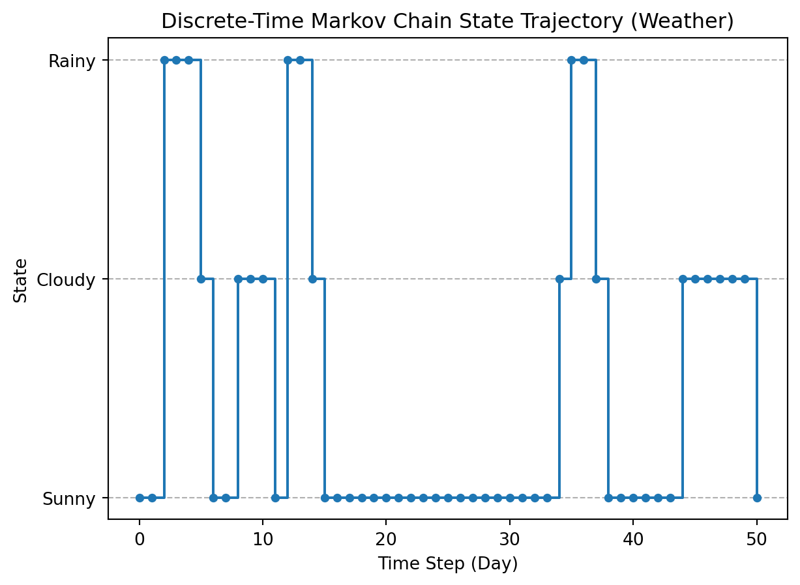

import numpy as np
from scipy.stats import chisquare
from collections import defaultdict
class LCG:
"""
X(n+1) = (a * X(n) + c) mod m
"""
def __init__(self, seed, a, c, m):
self._state = seed
self.a = a
self.c = c
self.m = m
self.seed = seed
def next_int(self):
"""Generates the next pseudo-random integer
in the sequence."""
self._state = (self.a * self._state + self.c) % self.m
return self._state
def generate(self, size):
"""Generates a sequence of integers and
normalizes them to [0, 1)."""
sequence_int = []
sequence_float = []
# Reset state to seed for sequence generation
self._state = self.seed
for _ in range(size):
next_val = self.next_int()
sequence_int.append(next_val)
# Normalize to a float in [0, 1) by dividing by the modulus
sequence_float.append(next_val / self.m)
return np.array(sequence_int), np.array(sequence_float)2 Simulation basics
2.1 What is Simulation?
In science and engineering, it is of paramount importance to develop reliable quantitative models that capture the essential behavior of real systems. Simulation provides a controlled, repeatable, and cost‑effective way to
- predict system behavior under varied conditions,
- explore “what‑if” scenarios and design alternatives,
- quantify uncertainty and sensitivity to inputs,
- validate hypotheses when experiments are impractical or expensive,
- and support optimization and decision making.
A simulation study typically involves the following steps:
- Construct a mathematical or computational model.
- Specify inputs and assumptions.
- Run experiments (often many replications with different parameters).
- Analyze outputs and comparing them with data or theoretical expectations.
Proper validation and uncertainty quantification are critical to ensure that simulation results are trustworthy and useful for engineering practice.
Simulation can be defined as the methods and procedures to define models of a system of interest and execute it to get raw data (Osais 2017). In normal simulation studies, we are not interested in the raw data by itself, but use it to calculate measures of interest regarding the system’s performance. For instance, in the example shown in Chapter 1, we saw that measures of interest include the average time that a customer has to way in the checkout queue. We sometimes also call these raw data synthetic data, since this is not the actual data that we would collect in the physical world. Synthetic data has by itself sparked interest in recent years due to its potential to enhance how we train and validate machine learning models, especially regarding data privacy and robustness, or when training data is expensive or scarce (Jordon et al. 2022; Breugel, Qian, and Schaar 2023).
In the rest of this chapter, we will introduce the basic principles and notions needed to understand how simulation works. We start with a gentle reminder of random numbers and distributions, and introduce standard methods of random number generation. We then move on into stochastic processes and how discrete-event simulation works. After that, we present common statistical techniques to deal with the output data of simulations and conclude the chapter with considerations about verification and validation of simulation studies.
2.2 Dealing with Random Numbers
We refer to random numbers as realizations of random variables that follow probability distributions. The following elements completely determine the statistical behaviour of randon numbers:
- Their type: discrete or continuous?
- The form of their probability distribution: binomial, normal, exponential, Poisson, etc.
- The joint or conditional distributions associated with the phenomenon at hand.
- The specific parameters used for each probability distribution.
In this book, we will mainly deal with parametric probability distributions, although everything applies to non-parametric distributions as well. We will hint at specific differences when appropriate.
2.2.1 Pseudorandom Number Generators
In general, any procedure to generate random numbers is called a pseudorandom number generator (PRNB). A PRNB can be defined as a deterministic algorithm that, given an initial seed, produces a long sequence of numbers that mimic the statistical properties of truly random samples. Although the sequence is fully determined by the seed (so it is not truly random, hence pseudorandom), a good PRNG yields values that are uniformly distributed, have minimal serial correlation, and pass standard statistical tests. Important PRNG properties include period length, equidistribution, independence, speed, and reproducibility (the same seed reproduces the same sequence). For simulation work we typically prefer generators with very long periods and strong statistical quality while cryptographic applications require cryptographically secure PRNGs. PRNGs are used to produce uniform variates that are then transformed into other distributions via methods such as inverse transform sampling, acceptance–rejection, or composition.
Let’s explore the properties of a specific PRNG, the Linear Congruential Generator (LCG) using the following Python code.
The LCG is one of the oldest and best known PRNG which are used to date. As can be seen in the code, it uses three integer parameters \(a\), \(c\) and the modulo \(m\) and computes the next random number using the recurrence:
\[ X_{n+1} = (a X_n + c) \operatorname{mod} m \tag{2.1}\]
Starting at \(n=0\), we initialize \(X_0\) to the random seed provided.
We can now use the generator as follows:
# LCG Parameters (a 'poor' LCG to highlight the deterministic nature)
# A small modulus (m) leads to a short period and visible patterns.
SEED = 42
A = 65 # Multiplier
C = 1 # Increment
M = 2**10 # Modulus (1024) - A small M is used for demonstration purposes
SEQUENCE_SIZE = 100000
# 1. Initialize and Generate Sequence
prng = LCG(SEED, A, C, M)
int_sequence, float_sequence = prng.generate(SEQUENCE_SIZE)
int_sequence[:10]array([683, 364, 109, 942, 815, 752, 753, 818, 947, 116])We have now generated 100000 random numbers using LCG (only first 10 are shown). But how can we ensure if this PRNM works well in practice? We will look now at the period length, how to check for uniformity and how to assert if there is serial correlation.
Period length
The period length assesses the number of values generated before the sequence of states returns to the first value (the starting state) for the first time. Note that in general the longer, the better. Note that in this case, the maximum possible period is \(m\), the modulo of the generator. We can calculate this with a simple Python function as follows:
def calculate_period(lcg_generator):
"""
Calculates the period (cycle length) of the LCG.
The period is the number of values generated before the sequence repeats.
"""
initial_state = lcg_generator.seed
current_state = initial_state
# Check for the next state immediately after the seed to start the loop
current_state = (lcg_generator.a * current_state + lcg_generator.c) % lcg_generator.m
period = 1
# Loop until the state returns to the initial seed
while current_state != initial_state:
current_state = (lcg_generator.a * current_state + lcg_generator.c) % lcg_generator.m
period += 1
# Safety break for potentially infinite loops in case of a non-standard LCG
if period > lcg_generator.m:
return f"Period is greater than modulus m ({lcg_generator.m}). Check parameters."
return period
period = calculate_period(prng)
period1024So in this case, our generator reaches the maximum period (1024), which is the best we can do.
Tests for uniformity
We want the generated random numbers to be uniformly generated (we will see later how generate numbers with different distributions started with uniformly generated random numbers). For this, we use the \(\chi^2\) test for uniformity:
- Null Hypothesis (\(H_0\)): The generated numbers are uniformly distributed.
- Alternative Hypothesis (\(H_1\)): The generated numbers are not uniformly distributed.
The main idea of this test is to divide the generated numbers in intervals, and check whether those intervals contain roughly the same number of generated values (e.g. a flat histogram). Like in the classical \(\chi^2\) test, we calculate the expected \(E_i\) and the observed \(O_i\) frequencies for each range and calculate the \(\chi^2\) statistic as usual:
\[ \chi^2=\sum_{i=1}^k\frac{(O_i-E_i)^2}{E_i} \]
We can use the following Python function:
def chi_squared_uniformity_test(data_float, num_bins=10):
"""
Statistical Test: Chi-Squared Goodness-of-Fit Test for Uniformity.
"""
N = len(data_float)
# 1. Bin the data to get observed frequencies
# The bins are equal-sized intervals in [0, 1).
observed_frequencies, _ = np.histogram(data_float, bins=num_bins, range=(0, 1))
# 2. Calculate expected frequencies for a perfectly uniform distribution
expected_frequency = N / num_bins
expected_frequencies = np.full(num_bins, expected_frequency)
# 3. Perform the Chi-Squared test
# The 'chisquare' function compares observed and expected frequencies.
# A small p-value (e.g., < 0.05) leads to rejection of H0, meaning non-uniformity.
chi2_stat, p_value = chisquare(f_obs=observed_frequencies, f_exp=expected_frequencies)
return chi2_stat, p_value, num_bins
chi2_stat, p_value_uniformity, num_bins = chi_squared_uniformity_test(float_sequence)
print(f'Chi2 statistic: {chi2_stat}, p-value: {p_value_uniformity}, number of bins: {num_bins}')Chi2 statistic: 2.2074, p-value: 0.9877471315220641, number of bins: 10In this case, the p-value is much higher than \(\alpha=0.05\) and we cannot reject \(H_0\), so the numbers appear to be uniformly random.
Serial correlation
The next possible measure to check is the serial correlation between the numbers generated. The Serial Correlation Check, also known as Autocorrelation at Lag 1, is a diagnostic measure used to characterize and detect a fundamental weakness in simple Pseudorandom Number Generators (PRNGs), such as the Linear Congruential Generator (LCG). The main idea is that the correlation between immediately adjacent numbers (hence lag 1) should be zero.
To calculate this, we form two sequences: the generated numbers and the same sequence moved by one place:
\[ \begin{aligned} S_n & = \{X_1,X_2,X_3,\dots,X_{n-1}\} \\ S_{n+1} & = \{X_2,X_3,X_4,\dots,X_n\} \end{aligned} \]
And now we calculate the Pearson correlation coefficient between \(S_1\) and \(S_2\).
\[ r=\frac{\sum (S_1-\bar{S_1})(S_2-\bar{S_2})}{\sqrt{\sum (S_1-\bar{S_1})^2(S_2-\bar{S_2})^2}} \]
Our goal is that \(r\) is as close to zero as possible (note that \(r\in[-1,1]\)). Let’s use the following code:
def serial_correlation_check(data_float):
"""
Characterization: Autocorrelation (Serial Correlation) Check.
"""
# X_n: all values except the last one
X_n = data_float[:-1]
# X_{n+1}: all values except the first one
X_n_plus_1 = data_float[1:]
# Calculate the Pearson correlation coefficient (r)
# The result is an array, we take the correlation between the two sequences (index 0, 1)
correlation_matrix = np.corrcoef(X_n, X_n_plus_1)
lag_1_correlation = correlation_matrix[0, 1]
return lag_1_correlation
lag_1_correlation = serial_correlation_check(float_sequence)
print(f'The lag 1 correlation coefficient is {lag_1_correlation}')The lag 1 correlation coefficient is 0.008943629579226285While the value is low, it’s not as close to zero as it should, which is a known weakness of the LCG (the generated numbers tend to fall onto a number of parallel hyperplanes). This is the reason why PRNM like the LCG are not normally used in practice. The de-facto standard for pseudorandom number generation in practice is the algorithm known as the Mersenne Twister. This is the default generator used in Python or MATLAB, and the preferred one for simulation purposes (but not for cryptographic purposes). The basic idea is to use a highly non-linear twisted generalized feedback shift register. Apart from being much faster than LCG, it passes the serial correlation chek with flying colors:
import random
random.seed(SEED)
# Generate a sequence of random floats in the range [0.0, 1.0)
float_sequence_mt = np.array([random.uniform(0, 1) for _ in range(SEQUENCE_SIZE)])
# Serial Correlation Check
lag_1_correlation_mt = serial_correlation_check(float_sequence_mt)
print(f'The lag 1 correlation coefficient is {lag_1_correlation_mt}')The lag 1 correlation coefficient is -0.000962673758206564which is an order of magnitude better than the LCG.
2.3 Sampling Methods
We have now a method for generating uniformly distributed random numbers. But what about other widely used distributions, like normal, exponential, Poisson, etc? In this section, we will review three popular methods for this purpose: the inversion method, the rejection sampling method, the Box-Muller transform and the mixture method. For all three methods, the general problem is as follows: we start with a random variable \(U \sim \text{ Uniform}(0,1)\). We want to convert \(U\) into \(X \sim f(x)\), where \(f\) is the target PDF of \(X\).
Inversion method
Suppose that we know the CDF of the target distribution \(F(x)=P(X\le x)\), and assume that we can invert it to \(F^{-1}(u)\). With this function, we can simply obtain \(X\) by
\[ X=F^{-1}(U) \tag{2.2}\]
For instance, imagine our target distribution is the exponential, with density function \(f(x)=\lambda e^{-\lambda x}\). Elementary calculus tells us that \(F(x)=1-e^{\lambda x}\). It can be shown that the inverse is
\[ F^{-1}(u)=-\frac{1}{\lambda}\ln(1-u) \tag{2.3}\]
Since \(U'=1-U\) is also uniform in \([0,1]\), we can simply write \(X=-\frac{1}{\lambda}\ln(U')\).
Rejection-sampling method
But what if our CDF is not easily invertible, or worse, we don’t have any analytical expression for it? Suppose that, although we don’t have \(f\), we have a proposal distribution \(g(x)\) so that it “envelopes” the target distribution in the sense that there is a constant \(c\) so that \(f(x)\le c g(x)\) (i.e., we do know the PDF). In this case, we can do the following:
- Sample \(x\) from the proposal distribution \(g(x)\).
- Sample a uniform \(U(0,1)\) random variable \(u\).
- If \(u < \frac{f(x)}{c g(x)}\), the candidate number \(x\) is accepted since it follows \(f(x)\).
- Otherwise, we repeat the procedure until we get a candidate accepted.
The trick now is to take a bounded uniform distribution as \(g\) that contains our target distribution \(f\). Once we have this, we can generate samples from virtually any probability distribution without requiring its CDF or inverse.
Box-Muller transform
The next method is specialized towards generating values for the normal distribution, and is widely used in practice. We start by generating two uniform random numbers \(u_1, u_2 \sim U(-1,1)\).
- First, we calculte the sum of their squares \(S=u_1^2+u_2^2\).
- If \(S\ge 1\) or \(S=0\), we reject both and return to the first step.
- Otherwise, we calculate \(C=\sqrt{\frac{-2\ln(S)}{S}}\).
- We output two normally distributed random numbers as \(z_1=u_1 C\) and \(z_2 = u_2 C\).
The random numbers generated follow a standard normal distribution \(N(0,1)\). For an arbitrary normal distribution \(N(\mu,\sigma^2)\) we just scale using the standard transformation \(X=\mu+\sigma Z\).
Mixture method
In the case that the target distribution can be expressed as a mixture of \(k\) different PDFs
\[ f(x)=\sum_{i=1}^k p_i f_i(x)\text{, with }p_i\ge 0\text{, and }\sum_{i=1}^k p_i = 1 \tag{2.4}\]
Then we can use the following methods to sample from \(f(x)\):
- Choose randomly an index \(i\in I\) from the set of indices \(I=\{1,2,\dots,k\}\). This is done by generating a random number \(u \sim U(0,1)\) and choosing the least index \(j\) so that \(\sum_{i=1}^j p_i < u\).
- Generate a random variable \(x\) from \(f_i(x)\) by using any of the aforementioned methods.
This is a suitable method, for instance, to generate random numbers that follow a Gaussian Mixture Model (GMM). In this case, we just sample an index and generate a random number according to the Box-Muller method, scaling accordingly if necessary.
2.4 Stochastic Processes
Now that we know how to generate random numbers and sample from different distributions, we need to understand how they interact over time in a simulation study. This is the realm of stochastic processes.
A stochastic process \(\{X(t), t \in T\}\) is a collection of random variables indexed by time. The set \(T\) can be:
- Discrete: \(T = \{0, 1, 2, ...\}\) or \(T = \{t_0, t_1, t_2, ...\}\)
- Continuous: \(T = [0, \infty)\) or \(T = [a, b]\)
For each fixed time \(t\), \(X(t)\) is a random variable. For each sample path (realization) of the process, \(X(t)\) is a function of time. The nature of the state space (the set of possible values of \(X(t)\)) leads to different classifications:
- Discrete state space: The process can only take certain values (e.g., number of customers in a queue)
- Continuous state space: The process can take any value in an interval (e.g., temperature in a reactor)
Understanding stochastic processes is crucial for simulation because they model how random events unfold over time, which is exactly what we need to simulate complex systems with uncertainty.
Stationary and non-stationary processes
A stochastic process \(\{X(t)\}\) is said to be stationary if its statistical properties do not change over time. More formally:
- The mean function is constant: \(E[X(t)] = \mu\) for all \(t\in T\).
- The variance function is constant: \(Var[X(t)] = \sigma^2\) for all \(t\in T\).
- The autocovariance function depends only on the time difference: \(Cov[X(t), X(s)] = C(|t-s|)\).
In contrast, a non-stationary process has statistical properties that vary with time. For example:
- A random walk is non-stationary because its variance increases with time.
- A seasonal time series with repeating patterns is non-stationary.
- A process with a trend component is non-stationary.
Stationarity is an important property in simulation because it allows us to:
- Make meaningful predictions about future behavior.
- Estimate parameters from historical data.
- Apply many statistical techniques that assume stationarity.
In the following we will see examples of different stochastic processes and how to simulate them efficiently.
2.4.1 Bernoulli and Binomial Processes
We call a Bernoulli process a sequence of independent trials with two possible outcomes (“success/failure”). The classical example is flipping a coin independently for \(n\) times.

We formally define a Bernoulli process as follows:
- Each variable takes values from the set \(\{0,1\}\). In our example, the value 0 could stand for heads, and 1 for tails.
- The probability of sucess (per convention, \(P(success)=P(X(t)=1)\)) is the same for every trial.
- The outcome for a given trial is independent of any other trial. So in our case, each coin flip is independent of all the others.
\[ P(X(t)=1)=p\text{ and }P(X(t)=0)=1-p \]
The Bernoulli counting process \(\{N(t)\}\) is just the sum of the outcomes of the first \(t\) trials.
\[ N(t)=\sum_{i=1}^t X(i) \]
where \(X(i)\) is a Bernoulli random variable with parameter \(p\). So \(N(t)\) counts the number of successes occurred in trials 1 to \(t\). Some properties of the counting process are:
- Each variable \(N(t)\) takes values in the set \(\{0,1,2,\dots,t\}\).
- The increment of this process \(N(t)-N(t-1)\) is equals to the result of the \(t\)-th trial, \(X(t)\).
- \(N(t)\) follows a binomial distribution:
\[ P(N(t)=k)=\binom{t}{k}p^k(1-p)^{z-k} \tag{2.5}\]
Let’s see how to simulate a Bernoulli process:
import random
def simulate_bernoulli_process(num_trials, success_probability):
"""
Simulates a Bernoulli process for a given number of trials and success probability.
"""
if not 0 <= success_probability <= 1:
raise ValueError("Success probability must be between 0 and 1.")
bernoulli_outcomes = [
1 if random.random() < success_probability else 0
for _ in range(num_trials)
]
return bernoulli_outcomesHere we are just using Python’s default random number generator (the Mersenne Twister) to check if the generated number is below or above the sucess probability, in the former case we count a success, otherwise a failure. We can now run the simulation for both Bernoulli and Bernoulli counting processes and visualize the results.
import matplotlib.pyplot as plt
import numpy as np
P_SUCCESS = 0.3 # Probability of success (p)
NUM_TRIALS = 50 # Total number of trials
random.seed(42) # Set seed for reproducibility
outcomes = simulate_bernoulli_process(NUM_TRIALS, P_SUCCESS)
counting_process = np.cumsum(outcomes)In this case, the Bernoulli counting process is just the cumulative sum of the generated Bernoulli process.
trials = np.arange(1, NUM_TRIALS + 1)
# Subplot 1: The Bernoulli Process (Outcomes)
plt.subplot(2, 1, 1)
plt.step(trials, outcomes, where='post', color='blue', linewidth=2)
plt.yticks([0, 1], ['Failure (0)', 'Success (1)'])
plt.title('Bernoulli Process (Sequence of Trials)')
plt.xlabel('Trial Number (i)')
plt.ylabel('Outcome ($X_i$)')
plt.grid(axis='y', linestyle='--')
plt.ylim(-0.1, 1.1)
# Subplot 2: The Bernoulli Counting Process (Cumulative Sum)
plt.subplot(2, 1, 2)
plt.step(trials, counting_process, where='post', color='red', linewidth=2)
plt.title('Bernoulli Counting Process (Cumulative Successes)')
plt.xlabel('Trial Number (t)')
plt.ylabel('Count ($N(t)$)')
plt.axhline(NUM_TRIALS * P_SUCCESS, color='green', linestyle=':', label='Expected Count')
plt.legend()
plt.grid(True, linestyle='--')
plt.tight_layout()
plt.show()
For this plot, we have generated \(T=50\) trials with a success probability of \(p=0.3\). The Bernoulli process outcomes are depicted in the upper part of the figure. In the lower part, the evolution of the counting process \(\{N(t)\}\) is shown. The expected count is just calculated by multiplying the number of trials with the success probability, which results in 15 as the expected number of successes.
2.4.2 Poisson Processes
We now switch from continuous to discrete time. The Poisson process is a canonical continous time counting process. It tracks the number of occurrences of a given event up to a certain time \(t\). Formally, let \(\lambda > 0\) be the rate of occurrences of the event in question. We define the Poisson process \(\{N(t),t\ge 0\}\) as follows:
- As initial condition, we set \(N(0)=0\).
- If we consider two non-overlapping intervals \([s,t]\cap [u,v]=\emptyset\), then the increments on those intervals are independent of each other:
\[ N(t)-N(s)\text{ is independent of }N(v)-N(u), [s,t]\cap [u,v]=\emptyset \tag{2.6}\]
- At any interval of length \(\tau=t-s\), the increments follow a Poisson distribution with parameter \(\lambda\tau\).
\[ N(t)-N(s) \sim \operatorname{Poisson}(\lambda\tau) \tag{2.7}\]
\[ P(N(t)-N(s)=k)=e^{-\lambda\tau}\frac{(\lambda\tau)^k}{k!} \tag{2.8}\]
The Poisson process is one of the most widely used stochastic models in science, engineering, and finance due to its ability to accurately model random, independent, and rare events occurring over time or space. Its practical relevance stems directly from the three conditions of its definition (independent, stationary increments, and the resulting Poisson distribution). For instance, the arrival of customer calls in a call center can be accurately modeled using Poisson processes. In engineernig, the number of defects found per area or volume (e.g. on a silicon wafer) can be also modeled this way (in this case, the rate is spatial rather than temporal, but the concept remains the same). In general, customer arrivals (at a hospital, a bank, a supermarket) can be also modeled using a Poisson process.
One of the main properties that makes the Poisson process useful in practice is the fact that is memoryless: the time until the next event is independent of how long it has been since the previous event, which aligns well with phenomena found in practice. Another advantage is that since the process is based in the Poisson (for the number of events per time interval) and the exponential distributions (for the time between events), the process is mathematically well tractable and closed-form solutions exists for many situations of interest.
The next code snippet demonstrates how to simulate a Poisson process.
import numpy as np
import matplotlib.pyplot as plt
import random
def simulate_poisson_process(rate_lambda, max_time):
if rate_lambda <= 0 or max_time <= 0:
raise ValueError("Rate and max_time must be positive.")
# Set up the event simulation
current_time = 0.0
event_times = [0.0] # Start at time 0 with the first "event"
while current_time < max_time:
# 1. Generate the next inter-arrival time
time_until_next_event = random.expovariate(rate_lambda)
# 2. Update the cumulative time
current_time += time_until_next_event
# 3. Record the event time if it's within the simulation duration
if current_time < max_time:
event_times.append(current_time)
# Calculate the event count at each recorded time
num_events = len(event_times) - 1 # N(0)=0 is the first entry
num_events_at_t = list(range(num_events + 1))
return event_times, num_events_at_tIn this code we exploit the fact that the interarrival times are exponentially distributed, so we sample a time and count it as a new event. We can now use the code to simulate the process:
RATE_LAMBDA = 2.0 # Average rate of 2 events per unit of time
MAX_TIME = 10.0 # Simulate over 10 time units
random.seed(42) # Set seed for reproducibility
event_times, cumulative_counts = simulate_poisson_process(RATE_LAMBDA, MAX_TIME)
event_times[:5][0.0,
0.5100301436374005,
0.5226945631587699,
0.6835065951962527,
0.8097996880313094]Like in the previous case, we can perform some visualizations to help understand the evolution of the process.
# Plot the step function of the counting process N(t)
# We use drawstyle='steps-post' to create the classic step-function look
plt.plot(event_times, cumulative_counts, drawstyle='steps-post', color='darkorange', linewidth=2, marker='o', markersize=4)
# Plot the expected count line
plt.axhline(RATE_LAMBDA * MAX_TIME, color='gray', linestyle='--', alpha=0.6, label='Expected Final Count')
plt.title(f'Poisson Counting Process $N(t)$ with $lambda = {RATE_LAMBDA}$')
plt.xlabel('Time (t)')
plt.ylabel('Number of Events ($N(t)$)')
plt.xlim(0, MAX_TIME)
plt.ylim(bottom=0)
plt.grid(True, linestyle='--')
plt.legend()
plt.show()
2.4.3 Markov Processes
The next type of process is fundamental for many practical applications and for simulation approaches that we will see in the rest of the book: Markov processes. A Markov process is a stochastic process that satisfies the Markov property, which states that the future state of the process depends only on the current state and not on the sequence of states that preceded it. Formally, a discrete-time Markov chain \(\{X_t, t \geq 0\}\) satisfies:
\[ P(X_{t+1} = j \mid X_t = i, X_{t-1} = i_{t-1}, \dots, X_0 = i_0) = P(X_{t+1} = j \mid X_t = i) \]
This property is known as the memoryless or Markov property. The process is fully characterized by its state space (the set of possible states) and the transition probabilities between states. Both the state space and the time parameter can be either discrete or continuous. In the discrete-time case, we normally call these processes Markov chains.
Transition Matrix
For a Markov chain with a finite state space \(S = \{1, 2, \dots, N\}\), the transition probabilities can be represented as a matrix \(\mathbf{P}\), where the entry \(\mathbf{P}_{ij}\) represents the probability of transitioning from state \(i\) to state \(j\):
\[ \mathbf{P}_{ij} = P(X_{t+1} = j \mid X_t = i) \]
The rows of the matrix \(P\) must sum to 1, as they represent probability distributions:
\[ \mathbf{P}= \begin{pmatrix} P_{11} & P_{12} & \dots \\ P_{21} & P_{22} & \dots \\ \vdots & \vdots & \ddots \end{pmatrix} \] \[ \sum_{j \in S} P_{ij} = 1, \quad \forall i \in S \]
Phenomena that can be naturally modeled using Markov chains include those where the state of the system in a given moment only depends on the moment immediately before, not on those before. For instance, in genetics, the frequency of a given allele in a generation only depends on the frequencies recorded in the previous generation. Or in inventory management, where decisions about the inventory levels are solely based on the current stock level.
Simulation example
Let’s see how to simulate a simple Markov chain with a discrete state space. Assume we want to model a heavily simplified weather system with three states: sunny (1), cloudy (2) and rainy (3). For the state transition matrix, we have:
\[ \mathbf{P}= \begin{pmatrix} 0.8 & 0.15 & 0.05 \\ 0.2 & 0.6 & 0.2 \\ 0.1 & 0.4 & 0.5 \end{pmatrix} \]
So for instance, the probability of a rainy day given that yesterday was cloudy is \(P_{23}=0.2\).
import numpy as np
import matplotlib.pyplot as plt
import random
def simulate_dtmc(start_state, transition_matrix, num_steps):
# 1. Initialize the chain
num_states = transition_matrix.shape[0]
current_state = start_state
state_history = [current_state]
# 2. Iterate for the specified number of steps
for _ in range(num_steps):
# Get the probability distribution for the next state, based on the current state (row of the matrix)
probabilities = transition_matrix[current_state, :]
# Select the next state using the probabilities
# np.random.choice selects a state from the possible states (0 to num_states-1)
# based on the corresponding probabilities.
next_state = np.random.choice(
a=np.arange(num_states),
p=probabilities
)
# Update and record
current_state = next_state
state_history.append(current_state)
return state_historyWe now setup the simulation for our example:
# Define the Transition Probability Matrix (P)
P = np.array([
[0.80, 0.15, 0.05], # From Sunny (0)
[0.20, 0.60, 0.20], # From Cloudy (1)
[0.10, 0.40, 0.50] # From Rainy (2)
])
# Define the State Space for interpretation
STATE_MAP = {0: 'Sunny', 1: 'Cloudy', 2: 'Rainy'}
START_STATE_INDEX = 0 # Start on a Sunny day
NUM_SIMULATION_STEPS = 50 # Simulate 50 days
# 3. Run the Simulation
np.random.seed(42) # Seed for reproducibility
simulated_states = simulate_dtmc(START_STATE_INDEX, P, NUM_SIMULATION_STEPS)
simulated_weather = [STATE_MAP[s] for s in simulated_states]
simulated_weather[:10]['Sunny',
'Sunny',
'Rainy',
'Rainy',
'Rainy',
'Cloudy',
'Sunny',
'Sunny',
'Cloudy',
'Cloudy']Now let’s plot the sequence of states against time:
time_steps = np.arange(NUM_SIMULATION_STEPS + 1)
plt.plot(time_steps, simulated_states, marker='o', linestyle='-', drawstyle='steps-post', markersize=4)
plt.yticks([0, 1, 2], [STATE_MAP[0], STATE_MAP[1], STATE_MAP[2]])
plt.title('Discrete-Time Markov Chain State Trajectory (Weather)')
plt.xlabel('Time Step (Day)')
plt.ylabel('State')
plt.grid(True, axis='y', linestyle='--')
plt.show()
Continuous-Time Markov Processes
In our previous example, we have assumed that the time index takes values in a discrete set. Let’s now consider the situation where time is continuous: \(\{X(t),t\ge 0\}\). In this case, the system might change its state at any time, instead of being governed by a fixed transition probability \(P_{ij}\). We now assume that the time spent in the current state \(i\) is itself a random variable which is continuous and exponentially distributed. Let’s denote this holding time by \(\tau_i\). We have:
\[ \tau_i \sim \operatorname{Exponential}(q_i) \tag{2.9}\]
where the parameter \(q_i\) is called the total exit rate or intensity from state \(i\). The Markov property is now given by the fact that the exponential distribution is memoryless: the time remaining in state \(i\) is independent on how long the system has been there already.
So how do we decide where which state to jump next? For that, let \(q_{ij}\) denote the instantaneous rate of moving from state \(i\) to \(j\). Our parameter \(q_i\) becomes then \(q_i=\sum_{i\neq j} q_{ij}\). We can convert this into a transition probability \(P_{ij}\) using \(P_{ij}=\frac{q_{ij}}{q_i}\). Instead of talking about a transition matrix \(\mathbf{P}\), we define a rate or Q-Matrix \(\mathbf{Q}\) where \(Q_{ij}=q_{ij}\) for \(i\neq j\) and \(Q_{ii}=-q_i\) (the diagonal elements are defined with a minus sign because we want the sum of each row -the sum of leaving and entering state \(i\)- to be 0).
We can simulate a continuous-time Markov chain in the following way:
import numpy as np
import matplotlib.pyplot as plt
def simulate_ctmc(Q_matrix, start_state, max_time):
current_time = 0.0
current_state = start_state
times = [0.0]
states = [current_state]
num_states = Q_matrix.shape[0]
while current_time < max_time:
exit_rate = -Q_matrix[current_state, current_state]
if exit_rate <= 0:
break
time_step = np.random.exponential(scale=1/exit_rate)
if current_time + time_step > max_time:
break
rates_row = Q_matrix[current_state, :].copy()
rates_row[current_state] = 0
jump_probabilities = rates_row / exit_rate
next_state = np.random.choice(np.arange(num_states), p=jump_probabilities)
current_time += time_step
current_state = next_state
times.append(current_time)
states.append(current_state)
times.append(max_time)
states.append(states[-1])
return times, statesThis function first enters a classical simulation loop where time advances until a stopping time has been reached. On each iteration, we first sample a time using the inverse of the exit rate (the minus diagonal element of the Q-matrix) as the parameter of an exponential distribution. Then we determine the state we are goint to jump to by calculating the jump probabilities. The next state is then chosen according to the jump probabilities.
Let’s now simulate a scenario where we want to study machine reliability. We define the state space as Operational (1), Degraded (2) or Failed (3). In the operational state, the machine works as expected, however it transitions to degraded often, but rarely to failed. In the degraded state, the machine transitions to failed quickly, since it is already not working properly (and never transitions to operational). Finally, in the failed state, the machine is broken and it will only transition to operational if the machine is repaired.
# Define the Generator Matrix (Q)
# Rows must sum to 0.
# Units: events per hour (rates)
Q = np.array([
# To: Op(0) Deg(1) Fail(2)
[-0.6, 0.5, 0.1], # From Operational (Exit rate = 0.6)
[ 0.0, -2.0, 2.0], # From Degraded (Exit rate = 2.0 -> Very fast exit)
[ 1.0, 0.0, -1.0] # From Failed (Exit rate = 1.0 -> Repair time)
])
STATE_NAMES = {0: 'Operational', 1: 'Degraded', 2: 'Failed'}
START_STATE = 0
DURATION = 24.0 # Simulate 24 hours
# --- Run Simulation ---
np.random.seed(101)
sim_times, sim_states = simulate_ctmc(Q, START_STATE, DURATION)Note that the units of \(\mathbf{Q}\) are rates or events per unit of time. Here the unit of time can be freely chosen, what is important is the fact that each number represents the number of events that happen, on average, in the unit of time, and that each row has to sum up to 0.
plt.step(sim_times, sim_states, where='post', color='purple', linewidth=2)
plt.yticks([0, 1, 2], [STATE_NAMES[0], STATE_NAMES[1], STATE_NAMES[2]])
plt.xlabel('Time (Hours)')
plt.ylabel('Machine State')
plt.title('CTMC Trajectory: Variable Holding Times')
plt.grid(True, axis='y', linestyle='--')
plt.xlim(0, DURATION)
plt.ylim(-0.5, 2.5)
for i in range(len(sim_times)-1):
if sim_states[i] == 0 and (sim_times[i+1] - sim_times[i] > 2.0):
mid_point = (sim_times[i] + sim_times[i+1]) / 2
plt.text(mid_point, 0.1, "Long Holding Time\n(Random)", ha='center', fontsize=9, color='green')
break
plt.show()
In this visualization, an exemplary long holding time (the first longer than 2 hours in the operational state) is highlighted. As can be seen, the holding times are highly variable (compare to the discrete-time Markov chain previously). Note also that the system spends very little time in the degraded state. This is because the exit rate (the diagonal element) is very high, so the machine passes this state quickly on its way to the failed state. Since the exit rate is quite low in the operational state, the machine stays there for longer periods.
Continuous-State Markov Processes
The last important case we need to take a closer look at is when the state space \(S\) is continuous. a continuous range of values, such as the position of a particle in space, the temperature of a system, or the level of a reservoir. In this case, the process is often described by a stochastic differential equation (SDE), which governs the evolution of the state over time. The time parameter can be in this case either discrete or continuous, so the corresponding considerations apply. The main challenge is how to deal with state transition probabilities. For this purpose, the most general solution is to switch from transition matrices to transition probability density functions that we denote by \(f(x_t | x_{t-1})\).
One particularly relevant example of Markov process is the random walk. The main idea is to let the process evolve from an initial state by applying random, independent perturbations:
\[ X_t=X_{t-1}+\epsilon_t\text{, }\epsilon_t \sim N(0, \sigma^2) \tag{2.10}\]
It is important to stress the fact that the noise terms \(\epsilon_t\) and the process steps \(X_{t-1}\) are independent. We can see that for random walks, the Markov property is fulfilled because \(X_t\) only depends on \(X_{t-1}\) and not on any values before. Random walks are used when modeling non-stationary time series, like stock prices without a drift.
Another important example is the Brownian motion or Wiener process. The Brownian motion is a stochastic process commonly used for modeling random movements of particles. Let’s denote this process by \(W(t)\). The defining characteristic of a Brownian motion is that its increments are normally distributed and independent of the past.
\[ W(t+s) - W(s) \sim N(0, t-s) \tag{2.11}\]
There are many practical applications of this type of process. In finance, the Brownian motion is used to model option pricing (the Black-Scholes equation). In polymer physics, the random, wriggling moving of a long-chain polymer molecule in a solvent can be well modeled using the Brownian motion. In audio engineering and signal processing, it can be used for random noise generation (white and pink noise).
Simulation example
We will now see how to simulate a Brownian motion. In order to simulate this process (and like it, any continuous-time Markov process), we resort to the discrete approximation method. The main idea is to model a continuous path by adding small, independent, normally distributed random increments at small time steps (\(\Delta t\)). We use the following equation:
\[ W(t_{i+1})=W(t_i)+\sqrt{\Delta t}\cdot Z_i \tag{2.12}\]
The square root of the increment follows from the increments property of the Brownian motion: the variance of the increments has to be proportional to the difference between the time steps.
import numpy as np
import matplotlib.pyplot as plt
def simulate_brownian_motion(total_time, num_steps):
if num_steps <= 0 or total_time <= 0:
raise ValueError("num_steps and total_time must be positive.")
dt = total_time / num_steps
time_points = np.linspace(0, total_time, num_steps + 1)
standard_deviation = np.sqrt(dt)
Z_increments = np.random.normal(loc=0.0, scale=1.0, size=num_steps)
dW_increments = standard_deviation * Z_increments
brownian_path = np.concatenate(([0.0], np.cumsum(dW_increments)))
return time_points, brownian_pathIn the code, we first discretize the time by dividing the total time by the number of simulation steps. Then we calculate the standard deviation as the square root of the increment and proceed to simulate the increments \(Z_i\). The final Brownian path is taken to be the cumulative sum of the increments.
Let’s now perform a simulation a visualize the results:
TOTAL_TIME = 1.0 # Simulate up to time T=1
NUM_STEPS = 1000 # Use 1000 steps for a smooth path
np.random.seed(42) # Seed for reproducibility
time, path = simulate_brownian_motion(TOTAL_TIME, NUM_STEPS)
plt.plot(time, path, label='Wiener Process Path', color='navy')
# The theoretical standard deviation at time t is sqrt(t)
std_dev = np.sqrt(time)
plt.plot(time, 2 * std_dev, 'r--', label=r'Theoretical Bounds ($\pm 2\sqrt{t}$)', alpha=0.6)
plt.plot(time, -2 * std_dev, 'r--', alpha=0.6)
plt.title('Simulated 1D Brownian Motion (Wiener Process)')
plt.xlabel('Time (t)')
plt.ylabel('State ($W(t)$)')
plt.axhline(0, color='black', linewidth=0.5)
plt.xlim(0, TOTAL_TIME)
plt.grid(True, linestyle='--')
plt.legend()
plt.show()
In this visualization, we plot one realization of a Brownian motion bounded by its theoretical bounds (using a standard deviation of \(\sqrt{t}\) up and down). The next visualization shows several realizations of the same Brownian motion:
NUM_PATHS = 5
for i in range(NUM_PATHS):
np.random.seed(i) # Use a different seed for each path
_, multi_path = simulate_brownian_motion(TOTAL_TIME, NUM_STEPS)
plt.plot(time, multi_path, alpha=0.7)
plt.plot(time, 2 * np.sqrt(time), 'k--', label='Theoretical Bounds', linewidth=1.5)
plt.plot(time, -2 * np.sqrt(time), 'k--', linewidth=1.5)
plt.title(f'Multiple Simulated Brownian Motion Paths')
plt.xlabel('Time (t)')
plt.ylabel('State ($W(t)$)')
plt.axhline(0, color='black', linewidth=0.5)
plt.xlim(0, TOTAL_TIME)
plt.grid(True, linestyle='--')
plt.show()
2.5 Chapter Summary
In this chapter, we introduced the fundamental concepts of simulation, focusing on random number generation, sampling methods, and stochastic processes. We explored pseudorandom number generators, including the Linear Congruential Generator and the Mersenne Twister, and discussed their properties and limitations. Sampling methods such as the inversion method, rejection sampling, and the Box-Muller transform were presented for generating random variables from various distributions. We then delved into stochastic processes, covering discrete and continuous-time processes like Bernoulli, Poisson, Markov chains, and Brownian motion, along with their simulation techniques. These concepts form the foundation for modeling and analyzing systems with inherent randomness.
2.6 Exercises
Implement a simulation for a geometric random walk, where the state evolves as: \[ X_{t+1} = X_t \cdot e^{\mu + \sigma Z_t} \] Here, \(Z_t \sim N(0, 1)\), \(\mu\) is the drift, and \(\sigma\) is the volatility. Simulate the process for 1000 steps with \(\mu = 0.01\) and \(\sigma = 0.2\), starting at \(X_0 = 1\). Plot the resulting trajectory.
Modify the Poisson process simulation to handle a time-dependent rate \(\lambda(t)\). For example, use \(\lambda(t) = 2 + \sin(t)\) over the interval \([0, 10]\). Plot the resulting event times and the cumulative count process.
Show that the exponential distribution is memoryless, i.e., for \(T \sim \text{Exponential}(\lambda)\): \[ P(T > s + t \mid T > t) = P(T > s). \] Provide a detailed derivation.
Prove that the Poisson process has stationary increments, i.e., the number of events in any interval of length \(\tau\) follows the same distribution, regardless of the starting time. Use the definition of the Poisson process and its properties in your proof.